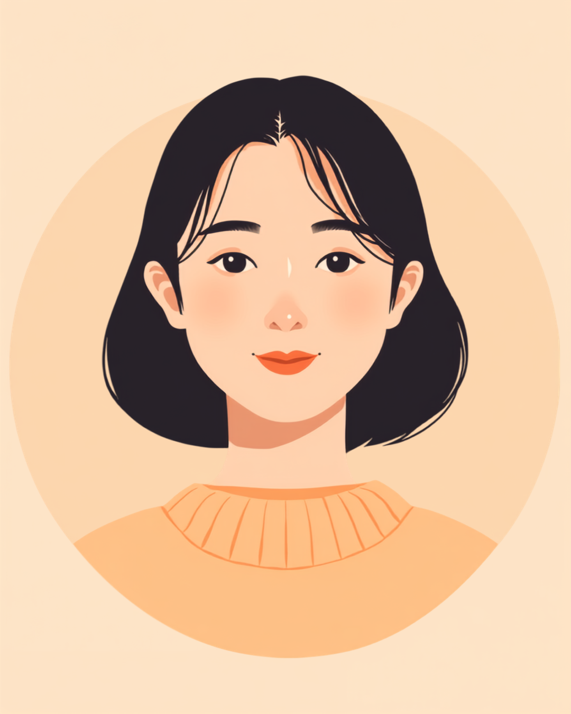

円形脱毛症は、体調そのものは変わらないのに、見た目の変化だけが先に周囲に伝わってしまう病気です。分け目の位置を変える、前髪でカバーする、それでも鏡を見るたびに範囲が増えていないか確認してしまう。仕事中も、風が吹くたびに、会議で上から覗き込まれるたびに気になってしまう方は少なくないようです。この記事では、円形脱毛症のある方が仕事の中で抱えやすい不安と、帽子やウィッグとの付き合い方、職場への伝え方を当事者の声をもとに整理しました（2026年7月時点の情報です）。
PR


「今日は増えてないかな」鏡を見るたびに不安になる朝

円形脱毛症は、自己免疫の働きなどが関係して起こると考えられている脱毛です。感染するものではなく、体力や仕事のパフォーマンスが落ちるわけでもありません。ただ、見た目の変化だけが先に人の目に触れてしまう、というつらさがあります。まめざる
就労支援の現場で話を聞いていると、円形脱毛症のある方から共通して出てくる言葉があります。「仕事中、ずっと頭のことを考えてしまう」というものです。会議で誰かが後ろを通るとき、風の強い日に外に出るとき、美容院で新しい担当者に当たったとき。本人にしか分からないタイミングで、緊張が走るのだと言います。
周囲からすれば「最近髪型変えた?」くらいの認識かもしれませんが、本人にとっては毎朝鏡の前で範囲を確認し、分け目やヘアアレンジで隠せるかどうかを判断する、ちょっとした儀式のような時間になっていることがあります。体調は変わらないのに、見た目の変化だけで気持ちが大きく揺れる。そのギャップに戸惑う方は多いようです。
!
円形脱毛症の症状の現れ方や進行のスピードには個人差があります。この記事で挙げる内容がそのまま当てはまるとは限らないため、気になる症状がある場合は自己判断せず皮膚科の専門医に相談することをお勧めします。
「最初、シャンプーのときに排水溝の髪がやけに丸く抜けてるなと思って、鏡で見たら500円玉くらいの範囲がツルッとしてたんです。もう仕事どころじゃなくて、その日は一日中頭に手をやってました。同僚に『今日どうしたの、髪触りすぎじゃない?』って言われて、めちゃくちゃ焦って『癖です』って誤魔化したんですけど、あれは今思うと変な言い訳でしたね。」
20代・女性（円形脱毛症・営業事務）
相談の一コマ

相談者
仕事中ずっと頭のことが気になって、会議に集中できないんです。誰かに見られてないか、そればっかり考えてしまって。

まめざる
見た目の変化を四六時中気にしてしまうのは、決しておかしなことではないんですよ。周りが思っている以上に、本人にとっては大きな出来事なんです。
相談者
考えすぎだと自分でも思うんですけど、止められなくて。
まめざる
まずは「隠す・隠さない」の選択肢を知っておくだけでも、少し気持ちが楽になることがあります。次の章で一緒に整理していきましょう。
帽子・分け目・ウィッグ、仕事中にどう隠すか迷う人へ
円形脱毛症への向き合い方は人それぞれですが、仕事中の「見え方」への対処法にはいくつかの選択肢があります。脱毛斑が小さく局所的な場合は、分け目の位置を変えたり、ヘアアレンジで自然にカバーできることもあります。範囲が広がってきた場合は、帽子やスカーフ、医療用ウィッグを検討する方もいます。
i
どの方法が合うかは、脱毛の範囲や職場の服装規定、本人の気持ちによって異なります。無理に一つの方法に合わせる必要はなく、季節や場面によって使い分けている方も多いようです。
医療用ウィッグは、以前より自然な見た目のものが増えているようです。費用は素材やタイプによって幅がありますが、自治体によっては購入費用の一部を助成する制度がある場合もあるので、後ほど紹介する窓口に確認してみることをお勧めします。
「正直言うと、最初はウィッグに抵抗がありました。負けたような気がして。でも範囲が半年で頭頂部近くまで広がって、さすがに分け目だけじゃごまかせなくなったんです。思い切って医療用ウィッグを買ったら、拍子抜けするくらい誰にも気づかれませんでした。むしろ『髪型変えた?似合ってる』って言われて、複雑な気持ちにはなりましたけど、仕事中の緊張は減りました。」
40代・男性（円形脱毛症・営業職）
職場に伝える、伝えない、その判断をどう分けるか
「伝えるべきかどうか」は、円形脱毛症のある方が必ずと言っていいほど悩むポイントのようです。帽子やウィッグで対応できる範囲なら、あえて伝えずに過ごしている方も多くいます。一方で、通院のために遅刻や早退が必要になったり、急に範囲が広がって隠しきれなくなったりした場合には、信頼できる相手にだけ伝えておくという選択をした方もいます。
伝えるかどうかを分けるヒント
- 今の対処法（帽子・アレンジなど）で仕事に支障が出ていないか
- 通院で急な休みや遅刻が必要になりそうか
- 服装規定があり、帽子の着用に説明が必要そうか
- 「誰にも言いたくない」という気持ちがどれくらい強いか
「言わなきゃいけない」も「言わなくていい」も、どちらも正解になり得ます。大事なのは、その時々の自分が一番楽でいられる選択を、自分自身で選べることだと思います。まめざる
伝えると決めた場合も、病状の詳しい説明までする必要はありません。「体質的に一部の髪が薄くなりやすく、しばらく帽子で過ごさせてほしい」「感染するものではない」程度の情報で十分だったという声が多くありました。信頼できる上司や人事担当者にだけ伝え、そこから必要な範囲でチームに共有してもらう、という進め方をとっている方もいます。
使える制度と、一人で抱えないための相談先
医療費助成・ウィッグ助成という選択肢
円形脱毛症そのものは、身体障害者手帳の対象になるケースは一般的ではないとされていますが、自治体によっては医療用ウィッグの購入費用を一部助成する制度を設けている場合があります。制度の有無や助成額は自治体ごとに異なるため、お住まいの市区町村の窓口や、通院先の皮膚科で確認してみることをお勧めします（2026年7月時点の情報です）。
相談できる窓口
- 皮膚科の専門医（治療の選択肢や、症状の記録についての相談）
- お住まいの自治体の窓口（ウィッグ購入助成などの制度確認）
- 職場の産業医・人事担当者（服装規定や配慮の相談）
- 就労移行支援事業所（働き方や職場探しについての相談）
円形脱毛症の症状の現れ方や、心の負担の大きさには個人差があります。この記事の内容がそのまま当てはまるとは限らないため、実際の判断は主治医や自治体の窓口とよく相談しながら進めることをお勧めします（2026年7月時点の情報です）。
鏡を見るたびに不安になる気持ちは、決して大袈裟なものではありません。隠す方法にも、伝える伝えないの判断にも、正解は一つではないということを覚えておいてください。
よくある質問
Q. 円形脱毛症は障害者手帳や公的な制度の対象になりますか？
円形脱毛症そのものは、身体障害者手帳の対象になるケースは一般的ではないとされています。ただし脱毛の範囲や状況によって医療費助成や自治体独自のウィッグ購入助成制度が使える場合があるため、詳しくはお住まいの自治体窓口や主治医にご確認ください（2026年7月時点の情報です）。
Q. 職場に円形脱毛症のことを伝えるべきか迷っています
伝えるかどうかに絶対の正解はないとされています。帽子やウィッグで対応できる範囲であれば伝えずに働いている方も多く、一方で急に範囲が広がった場合や、通院で休みが必要な場合は、信頼できる上司にだけ伝えておくと調整しやすくなったという声もあります。
Q. 医療用ウィッグの費用はどのくらいで、助成はありますか？
医療用ウィッグの価格帯は素材やタイプによって幅があります。自治体によっては購入費用の一部を助成する制度がある場合がありますので、お住まいの市区町村の窓口に確認することをお勧めします（2026年7月時点の情報です。制度の有無や内容は自治体によって異なります）。
Q. 仕事中に帽子をかぶるのは失礼にあたりませんか？
職場の服装規定や業種によって受け止め方は異なりますが、体調や治療に関わる事情がある場合は、事前に上司や人事に一言伝えておくと、周囲の受け止め方が変わりやすいという声があります。就業規則を確認しつつ、必要であれば相談してみることをお勧めします。
Q. 円形脱毛症はストレスが原因ですか？
ストレスがきっかけの一つになることはあっても、それだけが原因と言い切れるものではないとされています。自己免疫的な要因なども関係すると考えられており、原因を一つに決めつけて自分を責めすぎないことが大切だという意見もあります。心配な場合は皮膚科の専門医にご相談ください。
この5点を頭に置いておくだけで、少し気持ちが軽くなるかもしれません
PR


一人で抱え込む前に、今の気持ちを話してみませんか
「まだ迷っている」段階でも大丈夫です。mimemimeの無料相談は、今の状況の整理から一緒に始められます。
無料で話してみる
おのざる
mimemime代表。就労支援の現場経験をもとに、障がいのある方の働く不安に寄り添う記事を執筆。